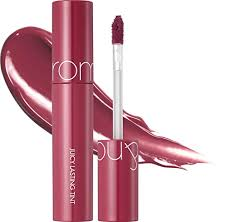

230.000đ 270.000đ
Thương hiệu: Rom&nd (Hàn Quốc)
Chất son: Tint bóng (Glossy Tint)
Rom&nd Juicy Lasting Tint là dòng son tint bóng "quốc dân" mang đến đôi môi căng mọng, tràn đầy sức sống như những quả mọng mùa hè. Màu Figfig là tông hồng đỏ đất siêu tôn da, phù hợp sử dụng hàng ngày ngay cả khi không trang điểm cầu kỳ.
Chất son dạng gel tint lỏng nhẹ, khi thoa lên môi tạo hiệu ứng màng nước trong veo, không gây bết dính. Sau khi lớp bóng trôi đi, son vẫn để lại một lớp tint màu bám chặt trên môi cực kỳ tự nhiên.